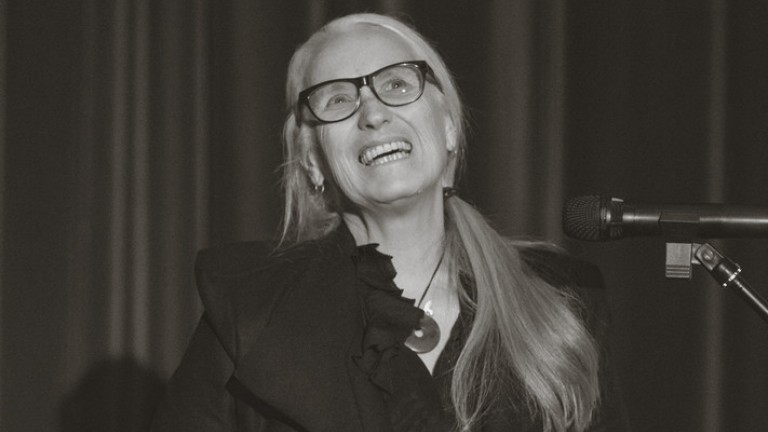

Jane Campion
Obsessed with lunatic women.

"The anthropologist sees coolly and dispassionately, the artist translates the spectacle into images unlike anyone else's."
Here's a time line of Campion's life:
ENGLISH / CHINESE
- 1954 - 出生于新西兰惠灵顿。她的母亲是一名演员、作家、女继承人。
- 1975 - 虽然在新西兰戏剧界长大，但她最初拒绝从事戏剧艺术，而是在惠灵顿维多利亚大学读了人类学-文学学士。
- 1975 - 尝试去威尼斯的一所艺术学校，但出现了各种复杂的问题。
- 1976 - 最终去了伦敦切尔西艺术学校并游历欧洲。
- 1977 - 回到澳大利亚，开始在悉尼大学艺术学院攻读视觉艺术（绘画）研究生。
- 1980 - 绘画的局限性令她不满，她开始依据“坦率的激情”制作短片。
- 1984 - 毕业于澳大利亚电影、电视和广播学校，此时她已经制作了几部短片。
- 1986 - 她的第一部短片 Peel (1982) 在戛纳电影节上获得短片金棕榈奖。毕业后，她还为ABC的轻娱乐系列Dancing Daze执导了其中一集，这后来又促成了她的第一部电视电影《两个朋友》。
- 1989 - 她的第一部长片《甜妹妹》获得国际奖项。
- 1990 - 进一步的认可来自《天使与我同桌》，这是一部新西兰作家Janet Frame的传记片，剧本来自Laura Jones。
- 1993 - 她的第三部长片《钢琴课》获得戛纳电影节金棕榈奖，澳大利亚电影学院最佳导演奖。
- 1994 - 在第 66 届奥斯卡颁奖典礼上，《钢琴课》获得最佳原创剧本奖，同时，她成为有史以来第二位获得最佳导演提名的女性。
- 1996 - 根据亨利·詹姆斯的小说，拍摄了电影《淑女本色》，主演为妮可·基德曼。
- 1999 - 拍摄了《圣烟》，由凯特·温斯莱特主演。
- 2003 - 编剧并导演了惊悚片《裸体切割》，改编自苏珊娜·摩尔的畅销书，为梅格·瑞恩提供了一个摆脱甜美角色的机会。
- 2009 - 编剧并导演了一部范妮·布朗的传记影片《明亮的星》，在戛纳电影节上放映。范妮是诗人济慈的爱人 。
- 2013 - 创作并编导了电视迷你剧《迷湖之巅》，获得黄金时段艾美奖最佳导演提名。
- 2014 - 担任戛纳电影节主竞赛单元评委会主席。
- 2017 - 共同编导的《谜湖之巅：中国女孩》上映。她的女儿爱丽丝·恩格勒特也在其中扮演了一个角色。
- 2021 - 新片《犬之力》在第 78 届威尼斯国际电影节上首映，坎皮恩获得最佳导演银狮奖。本片由她编剧和导演，改编自托马斯·萨维奇的小说。
- 2022 - 《犬之力》在第 94 届奥斯卡颁奖典礼上获得 12 项提名。她成为第一位多次获得最佳导演提名的女性，并凭借该片最终获奖。
“但我觉得必须将自己与家人区分开来。此外，我那时候认为戏剧表演很轻浮，当然，现在我很庆幸能在一个欢乐的氛围中长大。但当时，我认为这些人……不怎么真诚。”
“我认识的那个男的贩可卡因被抓了，而且我的意大利语说得不太好。我得去学校，但我并没有真正入学，因为没人知道我是谁，或我应该在哪里干什么。然后到冬天，他们称作agua alta，你的胶鞋会渗水。当然，我还被怀疑了，因为我是那男的的朋友。他后来跟我说，那其实是他妈从匈牙利给他寄了一些土豆泥，只是被警察误解了。但我看不大可能，你觉得呢？”
“我不喜欢英格兰......在那儿我得给自己头顶加个大盖子。但我想：'你必须忍受这个。这就是成年的仪式——痛苦。'
“我有一个复杂的理论来解释我为什么这么丧——在南半球，你可以把天气与你的情绪联系起来。但在英格兰，天一直很阴郁，你就死定了。
“而且当我听到英国上流社会的声音时，我会冒火——那个声音非常大声地谈论——'dahhhhggs'，‘Grrrr！”
“我有一个复杂的理论来解释我为什么这么丧——在南半球，你可以把天气与你的情绪联系起来。但在英格兰，天一直很阴郁，你就死定了。
“而且当我听到英国上流社会的声音时，我会冒火——那个声音非常大声地谈论——'dahhhhggs'，‘Grrrr！”
“我去的艺术学院导师都很年轻，喜欢极简主义和概念艺术。他们让每个人都重新思考一切，这让我们陷入了某种精神分裂症的狂欢。但那是一个非常令人兴奋的氛围。你可以做任何事情——装置、表演等等。
“首先我有点不知所措。然后，突然之间，我有生以来第一次真正尝试去做一件事。我从来没有承诺说自己很厉害：我知道有人比我聪明。我想做的只是学到足够的东西，这样我就可以在某种程度上支持那些真正有天赋的人。”
“首先我有点不知所措。然后，突然之间，我有生以来第一次真正尝试去做一件事。我从来没有承诺说自己很厉害：我知道有人比我聪明。我想做的只是学到足够的东西，这样我就可以在某种程度上支持那些真正有天赋的人。”
“我决定直接将我的作品专注于我会急急忙忙冲回家思考的事情上。例如，关于性和亲密关系的困惑。我当时正在画一些画，粗糙的性绘画，还创作了一些女权主义形象。
“我的想法中也有很多涉及到表演的东西，我过去常常会排一些关于女性和性的小剧——诸如此类。蛮怪的吧。但接下来，我决定不把它们做成戏剧，而是拍成电影。”
“我的想法中也有很多涉及到表演的东西，我过去常常会排一些关于女性和性的小剧——诸如此类。蛮怪的吧。但接下来，我决定不把它们做成戏剧，而是拍成电影。”
在接受采访时，坎皮恩讨论了她如何专注于故事中范妮的一面，并指出电影中只有两个场景没有以她为主角。
当加拿大导演泽维尔·多兰的电影《妈妈》获得评审团大奖时，他说坎皮恩的《钢琴课》“让我想为女性创作角色——有灵魂、意志和力量的美丽女性，而不是受害者或客体。” 作为回应，坎皮恩从座位上站起来给了他一个拥抱。
If you have time, you should read more about this incredible woman on her Wikipedia entry and The New York Times interview.